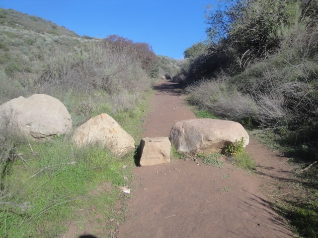

Tar Creek Falls 2013
All right. The time has come again and its time for more epic cliff jumping at Tar Creek. Now we couldn't go nearly as much as we wanted this year. But hey, we had a great time and got many jumps in on the 70 ftr. Anyways, when hiking down to Tar Creek, look for this tree. This tree means you're halfway to the Cascades.
This place is freaking beautiful.
Looking down at the edge of the 200 ft cliff.
I believe I can fly.
Holy Sh*t!!! It feels so good to be jumping this again.
Eventually, Santos jumped the rock. And it was hilarious.

Another day. Another fun day at Tar Creek.
The Cascade Ponds now double as a refridgerator for your beer (Note. Please don't cliff jump under the influence of alcohol).
Don't worry. The water only stings on the Cascades. Jumping the 70 ftr, water temperature is the LAST thing on your mind.
Can I just relax here at the 50 ftr?
A message from Incrediblecoasters to anyone who wants to visit Tar Creek. We want people to enjoy this awesome place and all, but for gods sake. PICK UP YOUR F*CKING TRASH!!!!! NOT COOL!!!! DON'T TURN TAR CREEK INTO A DUMP!!!! You know this place is also a Condor Sanctuary as well as a Cliff Jumping Goldmine. Those condors see your trash, eat it, and then they have to go see a vet. All because you are too f*cking lazy to pack out your trash (And yes, if you can't tell, I am flipping off every single person who left trash at Tar Creek).
The only thing worse than seeing trash is seeing broken glass. BROKEN GLASS!!!!!! I've had to be careful when leaving the 70 ftr pool when going to get my shoes after I threw them off the cliff (Quick Cliff Jumping Saftey Tip. Don't jump in shoes) and I've nearly stepped on broken glass when getting my shoes!!! How many people got seriously bad cuts from you leaving broken glass at Tar Creek!!? How does this effect the condors!!? I don't want them to close down Tar Creek because its been deemed that humans are a threat to the condors and can't enter because they keep littering the place with trash and broken glass. Don't you f*cktards ruin the best place to cliff jump in Southern California. I ought to kick your sorry littering asses for being that terrible.
Did I mention that Tar Creek Falls is beautiful.
I gotta get this shot on video with two people jumping the rock and the 70 ftr at the same time. Man is that gonna be a pain to set up.
Pff. Thats nothing. You should see the dirt cloud behind us when Santos drives.
Ooh. I'm not sure what this is. But we're pulling over to take pictures.
I love Tar Creek Falls.
All right. This was supposed to be a meet up with the amazing folks from Los Angeles Swimmin, but Throb and the gang showed up late. We still had a great time. As you can see, people are doing crazy tricks on the Cascades.
"Come on. You can tight rope across the water." *whisper* Get the camera and start filming. *whisper*
By far the best cliff I've ever jumped.
With the exception of my first jump of the season where I spiraled, every single 70 ftr jump I had was just fantastic.
But for as much as I love the 70 ftr and brag about it, I do admit that its not for everybody. If you don't have the courage or the experience to jump the 70 ftr, DON'T F*CKING JUMP IT!!!!! This guy nearly killed himself jumping it. Ended up getting a concussion and breaking some ribs as a result of his jump.
Now before the media and anti-Cliff Jumping advocates will use this unfortunate incident and use it to push for cliff jumping bans and talk about "What sort of idiot would jump off a cliff!!?" Shut the f*ck up and lets look at the facts. This dude had never jumped off any cliffs in his entire life. At least none of serious size like this. He may have done some Cascades or small stuff, but he had never TOUCHED the 50 ftr or even the 30 or 40 ft stuff like the Rock or the Wall. This guy was clearly not ready to jump the 70 ftr. From what I was told, he was deathly afraid of heights and couldn't even look down from the top. COULDN'T EVEN LOOK DOWN FROM THE TOP!!!! And yet, because he was dared to by a friend, he just took off and just jumped. Didn't look to see where he was jumping into. Didn't look to see where he should aim. He just BOLTED off the cliff blindly. Now I wish I had filmed this so I could better demonstrate this, but because he just blindly jumped off, he took off at an angle. Now with small jumps, thats not a big deal since you don't travel much to the water. You're just there. But when jumping the 70 ftr, you gain some distance and jumping at the wrong angle is gonna take you to the WRONG and DEADLY places. The dude was *this* close to hitting the concrete, which would've most likely resulted in death had he been that unfortunate. Take off at that angle with more speed and he probably WOULD'VE hit the rocks and died. Now for those of you starting to freak out about jumping at the right angle, ITS JUST STRAIGHT!!!! It's like an airport runway!!! If you need a giant arrow painted on the rock to tell you how to jump the 70 ftr, you shouldn't be jumping the 70 ftr in the first place. Now look at the photo of the guy jumping in mid air. Wow. That is about as far from proper cliff jumping form in every possible way. The only way for him to be worse is to be head first. NOT EVEN CLOSE to proper cliff jumping format. I can't claim to be a perfect master at cliff jumping format as I do f*ck up and have bad landings, but this is not even close. First off, it looks like he's in a fetus position. He's falling at an angle that when he hits the water, the force of the impact is going to violently SLAM him FACE FIRST into the water. A full on belly flop!!! From 70 ft hitting the water at 65 mph!!! Yeah, he's also wearing shoes and I've talked about how you shouldn't wear shoes cliff jumping. But with all the things this guy is doing wrong, wearing shoes is the LAST of his worries since I've seen people jump the 70 ftr with shoes. And yeah. Its doable. You can survive it injury free. So lets see, we have a guy who is afraid of heights who has absolutely NO cliff jumping experience at all. At the suggestion of a dare, he blindly jumps off the 70 ftr, aiming AWAY from the deep end heading straight towards the rocks. Because he is inexperienced and obviously terrified due to his fear of heights, he is in a sort of fetus position that will knock him down into a face plant and a belly flop as he lands face first in 6 inch deep water at 65 mph. Luckily for him, we was face planting and belly flopping because if he landed properly on his feet landing in 6 inches of water at those speeds, his bones would have SHATTERED!!!! Ironically, his HORRIBLE form saved him from an even worse fate by accidentally using the same force Shallow Divers use that allow them to dive from such great heights by sustaining the impact to the greatest surface area. But yeah. He ended up with a concussion and broken ribs. Yeah, I'm sorry he suffered those injuries, but at the same time, I just want to SMACK him for being so STUPID!!!! He wasn't stupid because he jumped the 70 ftr. He's stupid because he took on a jump that he had no clue on how to properly do, taking no precautions for saftey, and having no clue about what the hell he was doing. I know I sound harsh, but let me put it this way. Lets say you're either a big surfer or a big skiier. You're an expert and you surf 50 ft waves or ski down the biggest black diamond slopes. Now some dipsh*t comes along who has never surfed or skiied in his entire life. But they buy skis or a surfboard and hit the waves or slopes. This guy is afraid of heights, so he can't surf or ski. But because he was dared to by a friend, he decides to surf the 50 ft wave or ski down the most intense black diamond slope. Because he has no experience whatsoever in surfing or skiing, he SEVERELY wipes out and breaks some ribs and gets a concussion. He publicizes his injuries, and that, along with the other deaths from surfing and skiing are plastered all over the media and a ban on surfing at National Beaches or skiing at severak winter resorts. You gotta go surfing at night in these remote unknown beaches so you don't get caught and ticketed by the lifeguards and possibly arrested. Same goes for skiing. Because these bans are for your SAFTEY!!! You don't want to end up getting a concussion and several broken ribs like that one guy. Don't you? You wanna just totally smack that guy for being an idiot and ruining your fun by being so retarded and hurting himself by failing to take the most elementary and basic of precautions? Yeah. It makes your blood boil. Welcome to the world of cliff jumping.
Yeah. It sucks that he got injured but he violated one of the biggest rules of cliff jumping "Never jump anything beyond your limits." And who knows, this idiotic decision may have been influenced by either alcohol or marijuana. I don't know if that played a role or not, but I know a LOT of people were drinking and smoking that day and this dude could've EASILY been among them, adding two more of the basic rules of cliff jumping he violated.
All right. I was supposed to meet up with some awesome people for a hike. But with an early start and being indecisive on whether to go or not didn't help in my favor. So I went to Tar Creek intending to catch up with them even though I was so late. I never did.
Its really depressing how Tar Creek dried up already on Memorial Day Weekend.
Ick. The water is not pretty.
 Well at least the Cascade Ponds are still jumpable.
Well at least the Cascade Ponds are still jumpable.
CLEAN UP YOUR F*CKING TRASH!!!!! (See earlier rant) Ugh, I hate people.
Oh, and when I say the Cascades are doable, I only mean the first 2. The third Cascade became a puddle.
The Rock looks even worse.
And here's what the 70 ftr was like. Meh. At least I got on the 50 ftr that day. Hey, it was a great season with lots of 70 ft jumps and just a good time overall. Please let it RAIN RAIN RAIN!!!!! Let it pour in the winter so that we can have a much longer 2014 Cliff Jumping Season.
Home